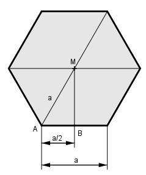

Aufgabe 103 Aus 350 cm3 Kunststoff soll ein regelmäßiges sechseckiges Formteil gepresst werden, das 6 cm dick ist. Wie groß ist die Seite a des Sechsecks?

Satz von Pythagoras im Dreieck MAB: AM2 = AB2 + MB2 |-AM2 a MB2 = AM2 - AB2 = a2 - (---)2 = 2 a2 3 = a2 - ---- = --- a2|√ 4 4 a MB = --- * √3 2 V = G * d Die Grundfläche besteht aus 6 gleich großen Dreiecken A: a --- * √3 a * 2 G = 6 * A = 6 * ---------------- 2 a2 * √3 a2 * √3 G = 6 * ---------- = 3 * ----------- 4 2 a2 * √3 350 = 3 * --------- * 6 cm3 |*2 2 700 = 3 * a2 * √3 * 6 cm3 |:3 * √3 * 6 22,45 = a2 |√ a = 4,74 cm